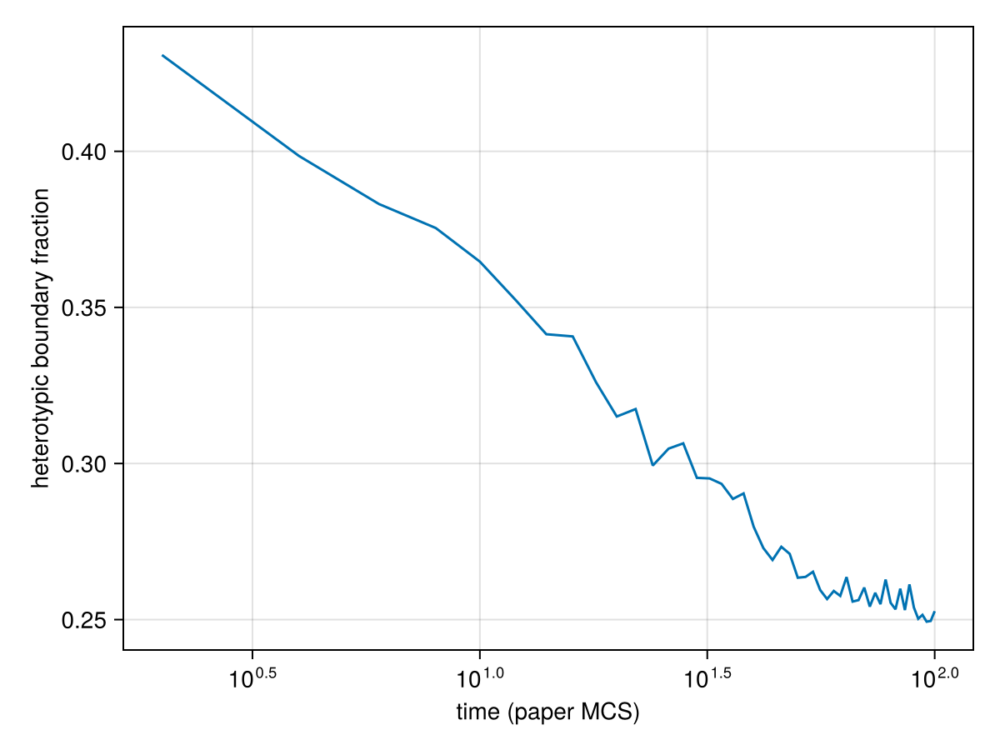

Cell sorting by differential adhesion
Mix two kinds of embryonic cells and they sort themselves out: one kind gathers into a core, the other wraps around it. Steinberg's differential adhesion hypothesis explains this with surface energies alone. Graner and Glazier (1992) put the hypothesis into a cellular Potts model: cells of two kinds, an area constraint and kind-dependent contact energies. That model is the smallest complete Potts model, so this page builds it first.
What you will learn
- how a
@potts_modeldeclares a lattice, cell kinds and parameters; - how an energy term is written as
domain => expression, and how it maps to a term of the paper's Hamiltonian; - how
@sweepchooses the Metropolis dynamics; - how to build a starting aggregate with a layout, solve at the paper's size, record the run as a movie and measure sorting;
- where the run differs from the paper, and why.
The paper
- F. Graner and J. A. Glazier, "Simulation of biological cell sorting using a two-dimensional extended Potts model", Phys. Rev. Lett. 69, 2013 (1992), doi:10.1103/PhysRevLett.69.2013.
- J. A. Glazier and F. Graner, "Simulation of the differential adhesion driven rearrangement of biological cells", Phys. Rev. E 47, 2128 (1993), doi:10.1103/PhysRevE.47.2128.
Every site $i$ of a square lattice belongs to one cell $\sigma_i$; cell 0 is the medium. Each cell has a kind $\tau(\sigma)$: dark $d$, light $l$ or medium $M$. The energy is Eq. (2) of the PRL:
\[H = \sum_{\langle i,j \rangle} J\big(\tau(\sigma_i), \tau(\sigma_j)\big)\,(1 - \delta_{\sigma_i \sigma_j}) + \lambda \sum_{\sigma} (a_\sigma - A)^2 ,\]
a contact energy for every pair of neighbouring sites in different cells, and an area constraint that holds each cell's area $a_\sigma$ near the target $A$. The medium has no area constraint.
We now write this model section by section. Each section is one or a few lines of a @potts_model block; the whole block is assembled and run at the end.
The paper run
The finished model, built step by step below, run at the paper's size, with the paper's starting state, parameters and run length. It is computed outside the docs build:
Paper run — Graner & Glazier (1992, 1993) cell sorting: 1000 cells on 347×347 (paper: ≈ 1000 cells, lattice unstated), 160 000 MCS = 10⁴ paper MCS (paper: same; 1 paper MCS = 16 MCS), seed 1, frames log-spaced in time. Start: an unrelaxed Voronoi aggregate (the paper relaxes it 400 paper MCS first).
The rest of this page builds the model and runs it at a size that takes seconds.
using Potts, PottsModelsStep 1: the lattice
@structural_parameters begin
lattice = (72, 72)
end
@lattice Lattice(lattice; boundary = Periodic(), neighborhood = Moore(1))
@relations proposal = Moore(1)@structural_parameters holds values that are fixed when the model is compiled, here the lattice size. @lattice builds a two-dimensional periodic lattice. Moore(1) is the neighbourhood used for contacts: the 8 nearest and next-nearest neighbours, as in the paper. @relations proposal = Moore(1) makes copy attempts come from the same 8 neighbours: the paper copies from "one of the eight neighboring sites" (PRE, p. 2130).
Step 2: cell kinds
@kinds medium dark lightThe first kind is always the medium. The others are cell kinds; a cell's kind decides which energy terms apply to it and which contact energies it pays.
Step 3: parameters
@parameters begin
λ = 1.0
V₀ = 40.0
T = 10.0
J[kind, kind] = [0 16 16; 16 2 11; 16 11 14]
endλ, V₀ (the target area $A$) and the temperature T are numbers. J[kind, kind] is a table indexed by two kinds, in the order of @kinds: row and column 1 are the medium, 2 dark and 3 light. These are the PRL's values (p. 2015): $J(d,d) = 2$, $J(d,l) = 11$, $J(l,l) = 14$ and $J(d,M) = J(l,M) = 16$.
They obey the PRL's sorting hierarchy, Eq. (3): dark–dark contacts are the strongest (cheapest), the heterotypic energy is above the mean of the two homotypic ones, and contacts with the medium cost most. Let us check it:
J = [0 16 16; 16 2 11; 16 11 14]
J_dd, J_dl, J_ll, J_M = J[2, 2], J[2, 3], J[3, 3], J[1, 2]
J_dd < (J_dd + J_ll) / 2 < J_dl < J_ll < J_MtrueThe PRE (Sec. II) reads the same table as three surface tensions, the extra cost of a heterotypic boundary over the homotypic ones:
γ_dl = J_dl - (J_dd + J_ll) / 2
γ_lM = J_M - J_ll / 2
γ_dM = J_M - J_dd / 2
(; γ_dl, γ_lM, γ_dM)(γ_dl = 3.0, γ_lM = 9.0, γ_dM = 15.0)$\gamma_{dl} > 0$, so the kinds separate. $\gamma_{dM} > \gamma_{lM} + \gamma_{dl}$, so a light layer between the dark cells and the medium lowers the energy: light cells engulf dark ones.
Step 4: the area constraint
cells(dark, light) => λ * (volume - V₀)^2Energy terms are domain => expression pairs inside an @energy block. The domain cells(dark, light) sums the expression over every dark and light cell, so the medium is exempt, as in the paper. volume is the built-in cell size (the area in 2D). This is the second term of Eq. (2): $\lambda \sum_\sigma (a_\sigma - A)^2$.
Step 5: the contact energy
contacts => J[kind, kind′]The domain contacts sums over pairs of neighbouring sites (in the lattice's Moore(1) neighbourhood) that belong to different cells: the factor $(1 - \delta_{\sigma_i \sigma_j})$ of Eq. (2). kind is the kind of one site's cell and kind′ that of its neighbour's, so J[kind, kind′] is $J(\tau(\sigma_i), \tau(\sigma_j))$.
You never write the energy change of a copy: the compiler derives $\Delta H$ from $H$.
Step 6: the sweep
@sweep Metropolis(; temperature = T)
endA copy attempt picks a random site and a random neighbour, and proposes to copy the neighbour's cell into the site. Metropolis accepts it with probability 1 when $\Delta H \le 0$ and $e^{-\Delta H / T}$ otherwise (PRE Eq. (3)). One Monte Carlo step (MCS) is as many attempts as the lattice has sites. The paper's MCS is 16 times longer (PRL, p. 2014), so one paper MCS is 16 of ours.
The whole model
Put together, the sections make one @potts_model:
@potts_model CellSorting begin
@structural_parameters begin
lattice = (72, 72)
end
@lattice Lattice(lattice; boundary = Periodic(), neighborhood = Moore(1))
@relations proposal = Moore(1)
@kinds medium dark light
@parameters begin
λ = 1.0
V₀ = 40.0
T = 10.0
J[kind, kind] = [0 16 16; 16 2 11; 16 11 14]
end
@energy begin
cells(dark, light) => λ * (volume - V₀)^2
contacts => J[kind, kind′]
end
@sweep Metropolis(; temperature = T)
endCellSorting is now a constructor; keywords override structural parameters and parameter defaults. All parameters keep the paper's values. Only the lattice is chosen here, to fit the starting aggregate. The paper run at the top of this page uses the paper's 1000 cells; here we use 200, so that the page builds in seconds.
The starting state
A starting state names the owner of every site and the kind of every cell. Layouts build one from layers. The paper starts from a compact aggregate of "about 1000 cells" (PRE, p. 2129) of area about 40, with the kinds assigned at random. VoronoiBall (from PottsModels) divides a disk into compact cells of about equal area; its kinds are cycled over randomly placed cells, so dark and light are mixed at random, in equal numbers. A disk of area $n \times 40$ sites, with a 10-site margin of medium on every side, sets the lattice:
n = 200
radius = sqrt(40n / π)
side = 2ceil(Int, radius) + 1 + 2 * 10
@named sorting = CellSorting(; lattice = (side, side))
u0 = layout(VoronoiBall(n; radius, kinds = [:dark, :light], seed = 1), sorting)
first(u0[2].second, 6)6-element Vector{Symbol}:
:dark
:light
:dark
:light
:dark
:lightlayout returns an operating point, [ownership => σ, kind => kinds], the same form a hand-made state would have. Passing the model (rather than a size) lets the layout use its lattice. Other layers (Tiling, Scattered, InsertUntil, combined with overlay) appear on the other model pages.
Solving
A PottsProblem joins the model, the starting state and the time span (in MCS); solve runs it. 1600 MCS are 100 paper MCS (the paper runs to $10^4$); saveat keeps 51 states for the movie and the measurement:
prob = PottsProblem(sorting, u0, (0, 1600); seed = 1)
sol = solve(prob, SequentialCPM(); saveat = 0:32:1600)PottsSolution: retcode Success, 51 saved states, 1600 MCS
t: [0, 32, 64, 96, 128, …, 1472, 1504, 1536, 1568, 1600]The run as a movie
MakiePotts draws saved states, one colour per kind (dark cells blue, light cells green, medium black); boundaries = true outlines each cell. record_potts writes the whole solution as a movie:
using MakiePotts, CairoMakie
record_potts("graner_glazier/sorting.mp4", sol; framerate = 10, title = "Cell sorting, 200 cells",
figure = (; size = (400, 400)), plot = (; boundaries = true))Same-kind clusters form and merge, and light cells collect at the medium: the start of the engulfment the PRL describes. (A single saved state is drawn with pottsplot(renderframe(sol.u[k])).)
Measuring sorting
The paper measures sorting by the share of cell–cell boundary that is heterotypic (dark–light). Each saved state u holds the owner array u.σ, and u.cell.kind gives each cell's kind (1 dark, 2 light). We count every Moore bond once, through the periodic edges:
function heterotypic_fraction(u)
σ, k = u.σ, u.cell.kind
nx, ny = size(σ)
hetero = homo = 0
for y in 1:ny, x in 1:nx, (dx, dy) in ((1, 0), (0, 1), (1, 1), (1, -1))
a, b = σ[x, y], σ[mod1(x + dx, nx), mod1(y + dy, ny)]
(a == b || a == 0 || b == 0) && continue
k[a] == k[b] ? (homo += 1) : (hetero += 1)
end
return hetero / (hetero + homo)
end
CairoMakie.activate!(type = "png")
paper_t = sol.t[2:end] ./ 16 # in paper MCS
lines(paper_t, heterotypic_fraction.(sol.u[2:end]);
axis = (xscale = log10, xlabel = "time (paper MCS)", ylabel = "heterotypic boundary fraction"))
The fraction falls about linearly in the logarithm of time, the slow coarsening the papers report (PRL Fig. 2, PRE Fig. 13).
Differences from the paper
| Paper | Here | |
|---|---|---|
| Time unit | 1 MCS = 16 copy attempts per site (PRL p. 2014) | 1 MCS = 1 attempt per site; times above are converted to paper MCS |
| Run length | to $10^4$ paper MCS | 100 paper MCS on this page, to keep the docs build short |
| Cells | about 1000 | 200 on this page (1000 in the paper run above) |
| Starting aggregate | relaxed as one kind for 400 paper MCS before the kinds are assigned (PRE §II D3) | Voronoi cells of mean area 40, not relaxed |
| Boundary | not stated | periodic, with a 10-site medium margin on this short run (60 in the paper run and by default in graner_glazier_aggregate) |
| Measurement | on a copy annealed for 2 paper MCS at $T = 0$ (PRE p. 2134) | on the raw states |
| Target area per kind | one value, except the cavity run (PRE Fig. 28) | one V₀; a per-kind table V₀[kind] gives the cavity run's targets |
Every energy, parameter, neighbourhood and the temperature are the paper's.
This model ships as GranerGlazier
PottsModels exports this model as GranerGlazier. It is the same @potts_model: the test suite checks that it compiles to the same code, with the same defaults, as CellSorting above.
@named gg = GranerGlazier(; lattice = (side, side))PottsSystem gg on 123×123 (2D)
kinds: medium, dark, light
parameters: λ, V₀, T, J
energy cells(1, 2) => ((-V₀ + volume)^2)*λ
energy contacts => Potts.at2(J, kind, kind′)
sweep: metropolis(temperature = T)Its starting states are graner_glazier_aggregate(n), the aggregate built above but with a 60-site medium margin by default (a long run drifts, and a 10-site margin lets it reach the lattice edge and its periodic image; pass margin for a short run), and graner_glazier_state(), 64 cells made by the PRE's relaxation recipe on the default 72 × 72 lattice.
PottsModels.GranerGlazier — Function
GranerGlazier(; name, lattice = (72, 72), λ, V₀, T, J)Cell sorting by differential adhesion (Graner & Glazier, Phys. Rev. Lett. 69, 2013, 1992): two cell kinds with an area constraint and kind-dependent contact energies on a periodic lattice with Moore contacts and proposals. The defaults are the papers' (PRL p. 2015; PRE p. 2139): J_dd = 2, J_dl = 11, J_ll = 14, J_cM = 16, λ = 1, V₀ = 40, T = 10. They satisfy its sorting hierarchy J_dd < (J_dd + J_ll)/2 < J_dl < J_ll < J_M (PRL Eq. 3), and light cells engulf the dark ones.
Differences from the paper (Glazier & Graner, Phys. Rev. E 47, 2128, 1993):
- one MCS here is
Ncopy attempts, the paper's is16N, so paper timetis ours16t; - 64 cells (
graner_glazier_state) against about 1000: bulk topology (⟨n⟩, moments) is not measurable, boundary fractions scale with perimeter/area, and sorting levels off after about 500 paper MCS instead of continuing to 10⁴.scaletiling makes more aggregates, not a bigger one; - a periodic lattice (the paper does not say): fine for sorting, not for runs where cells detach and would wrap around;
- the model does not anneal. The paper measures on a copy annealed for 2 paper MCS at T = 0 (32 of ours);
test/papers.jldoes the same; - one
V₀for both kinds: the cavity run (per-kind targets, non-neighbour copies) is not expressible yet.
PottsModels.graner_glazier_aggregate — Function
graner_glazier_aggregate(n = 1000; seed = 1, margin = 60) -> (labels, kinds)A paper-size initial condition (PRE 47, p. 2129: "about 1000 cells"): one round aggregate of n cells of about V₀ = 40 sites, dark (1) and light (2) randomly mixed in equal numbers (±1; the paper does not state the fraction), surrounded by a medium margin of margin sites on a square lattice of side 2⌈√(40n/π)⌉ + 1 + 2margin (use lattice = size(labels)). On the periodic GranerGlazier lattice the gap to the aggregate's image is 2margin. The default of 60 sites is for long runs: over thousands of MCS the whole aggregate drifts, and with a small margin (10 sites) it reaches the lattice edge and wraps across it (n = 200: after about 23 000 MCS for one run seed), and over 10⁴ paper MCS a 1000-cell aggregate joins its periodic image. Short runs can pass a smaller margin to save lattice area (the lattice grows as the square of its side). The aggregate is rebuilt on the larger lattice, not embedded: a different margin can move a few boundary sites between cells (32 sites for n = 1000, seed = 9, margin 60 against 10), so compare margins statistically, not site by site. Built with the VoronoiBall layout (a centroidal Voronoi tessellation of a disk of area 40n), deterministic in seed.
The paper relaxes its aggregate as one cell type for 400 paper MCS before assigning types (§II D3); no Potts relaxation is run here. The cell areas are more spread than after that relaxation: SD 7.6 (range 21–67) for n = 1000, against 1.6 for a Potts-relaxed aggregate. The sorting time course does not see the difference: the heterotypic boundary fractions from this start and from a relaxed one agree within 0.005 at 1, 10 and 100 paper MCS (6 seeds). The area term evens the cells out within the first MCS.
PottsModels.graner_glazier_state — Function
graner_glazier_state(scale = 1) -> (labels, kinds)The 72×72 initial condition of PRE §II D3 (made by data/graner/generate.jl): a square 51×50 aggregate of 64 staggered rectangular cells of height 5 and various widths (mean area
- is relaxed as one type for 400 paper MCS until boundary length and medium fraction are
flat, then each cell is dark or light with probability ½ (33 dark, 31 light). Tiled scale × scale times. Kinds are numbers (1 = dark, 2 = light).
PottsModels.VoronoiBall — Type
VoronoiBall(n; radius, center = <lattice centre>, kinds, seed, iterations = 30)A layout: the sites within radius of center (a ball), divided into n compact cells. The cells are the lattice Voronoi regions of n generators, drawn at distinct random ball sites with StableRNG(seed) and moved iterations times to the centroid of their region (Lloyd's algorithm). Cell volumes are similar but not equal (in 2D, a volume SD of about a fifth of the mean). A lattice Voronoi region can have stray single sites; each piece that is not connected to its cell's largest piece is given to the neighbouring cell it shares the most bonds with, so every cell is one piece under the nearest-neighbour steps of the geometry (the shortest steps in the embedding: the 2N axis steps on a square lattice, the 6 neighbours on a hexagonal one), hence under any neighbourhood that contains them (VonNeumann, Moore, Hex). kinds is cycled over the cells in generator order; the generators are random, so the kinds are mixed at random in space and in equal numbers (±1 for two kinds).
center is in lattice indices (axial on a hexagonal lattice). Distances and centroids are Euclidean in the lattice's Cartesian embedding (embed), so the ball and the cells are round on hexagonal lattices too. The embedding ignores the lattice spacing: radius is in lattice spacings, and on a lattice with unequal spacings the ball is round in index units, not in physical units. Any dimension. Sites outside the lattice or its domain are not in the ball: a ball crossing a boundary, periodic or not, is clipped, not wrapped. Throws an ArgumentError when the ball has fewer than n sites.
Reproduction
A full reproduction page, which runs GranerGlazier against the papers' figures (the sorting time course, the engulfment end state, partial sorting and a negative control), is in preparation.